12. Molding and casting
For this week of molding, I used a wax bar to create my design on the CNC router. Later, I measured how much water my design could hold to estimate how much 3030 silicone I would need for the mix. For product A, every 100 ml required 10 ml of product B, which is the catalyst. In my calculations, it turned out that my design could hold 180 ml of water, which, when measured by weight, was 0.1823 kg. After conversions, I determined that I needed a total of 0.0202 kg of product B. In the images, you'll see how the combined weight of both products was 0.2083 kg, slightly exceeding what I needed. However, this was fine as there was still some product left in the mixing container.
Here you will find the group assignment with a little more information about the Molding and Casting.
Here you can find the datasheet for silicon 3030.
For the first part of this task, the first thing was to know what I wanted to do, so I decided to search for a 3D design on the internet. The design I chose is freely available, and you can find it at the following link..
The next step I took was to 3D print the model to see if it would really look good and to understand in what way it would be convenient for me to make the mold.
Next, with the help of SolidWorks, I split the model in half and then assembled it into a block exactly the size of the wax where I would make the mold.
The next thing I did was open VCarve and create a new file.
Subsequently, I placed the measurements of the wax block I will work with in order to have everything at the exact depth

To import the SolidWorks file, it's important that it's in STL format. To import it, you can find the option at the top: Model -> Import Components / 3D Model.
Selecting the file we created, it's necessary to position it correctly to avoid errors. That means it should be within the workspace boundaries.
For the next step, you should select the option shown in the image for the extraction of less detailed material, as well as the tool.
To finish, you should use another more detailed tool for the finishing, which is the ball-end mill. In my case, I used this one.
In the following image, you can see the wax block that I used. You can also see the tools that I used.
To set it up on the CNC Asia Robotica shop-1325, we placed the wax block secured with its respective screws. However, in doing so, we realized that we only needed to tighten the nuts because otherwise, the table that served to grip would warp and cause the block to be crooked.
 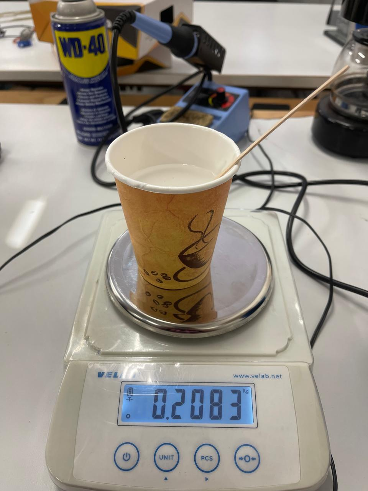
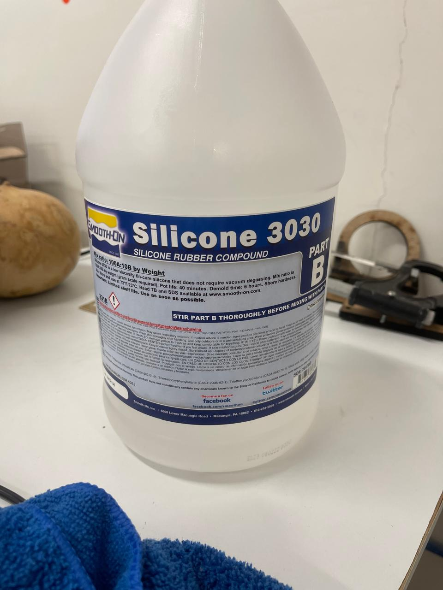
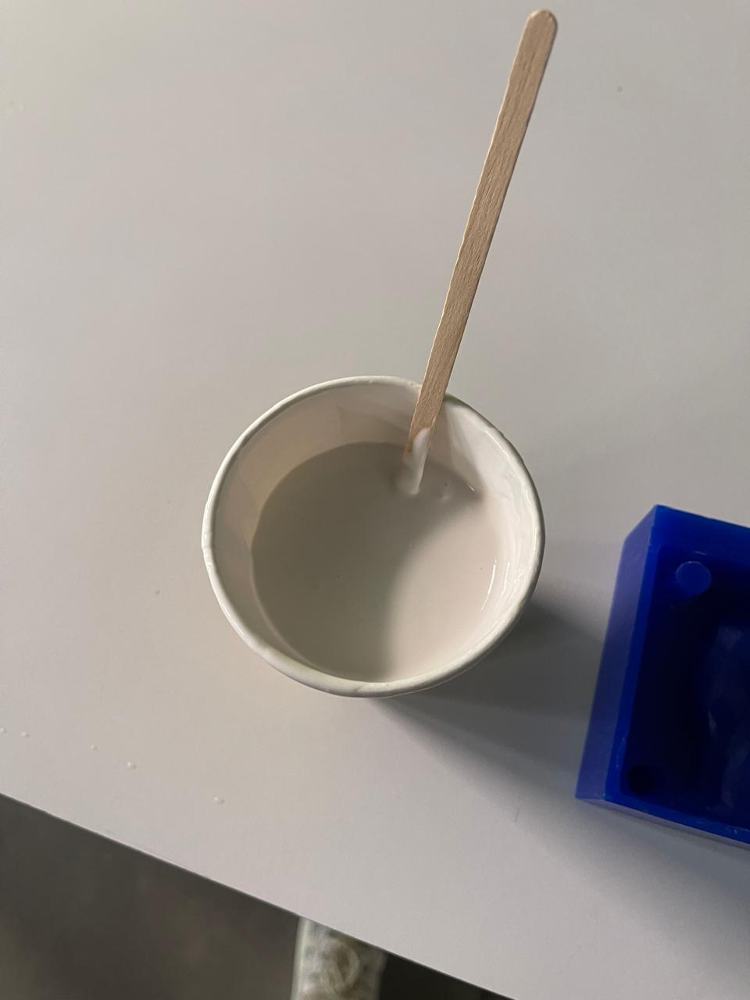
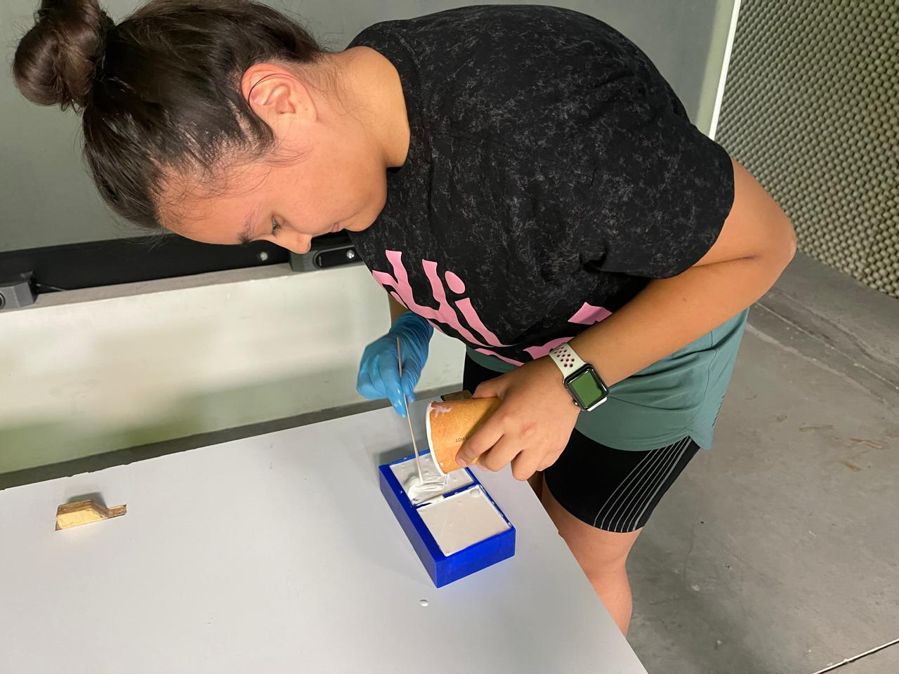
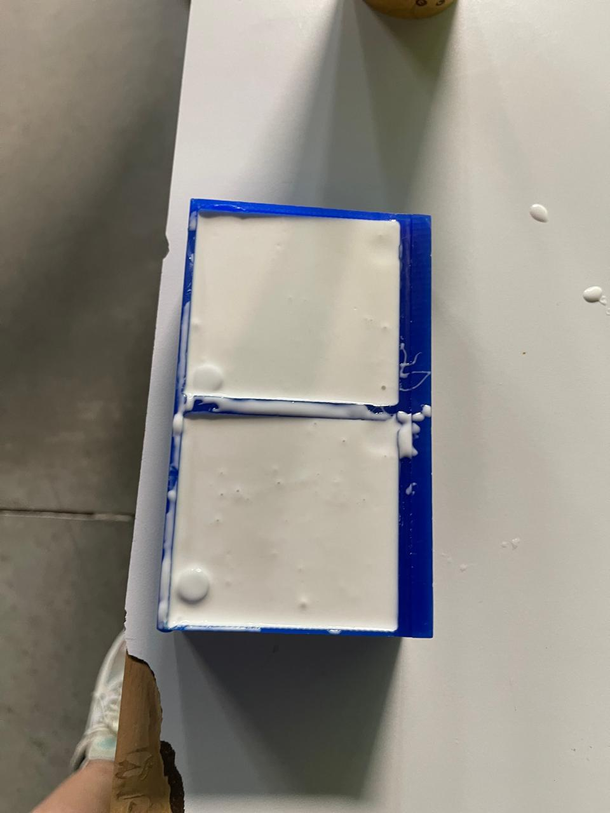
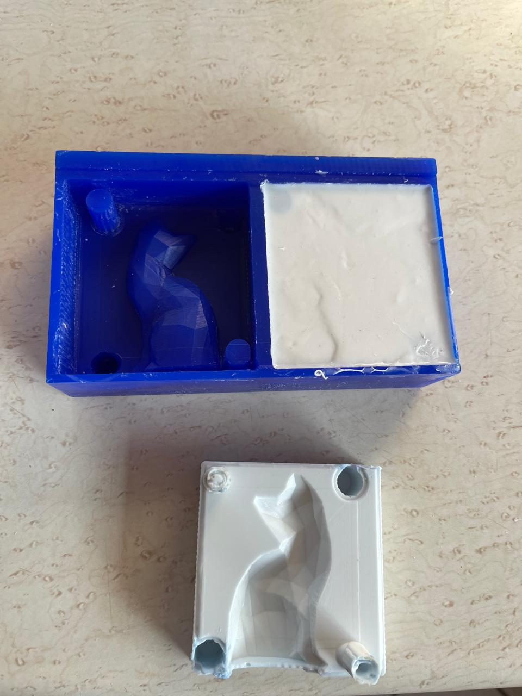
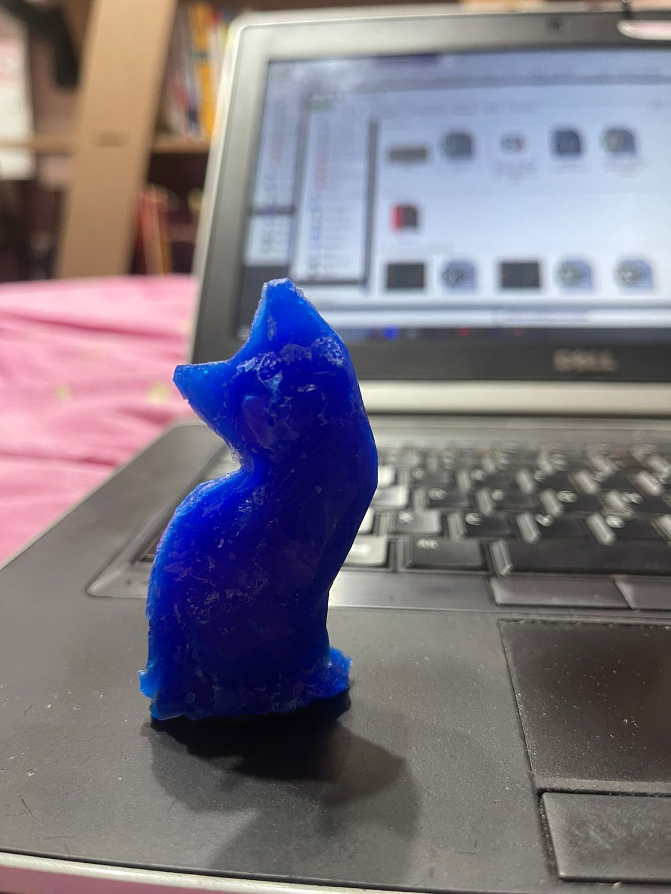
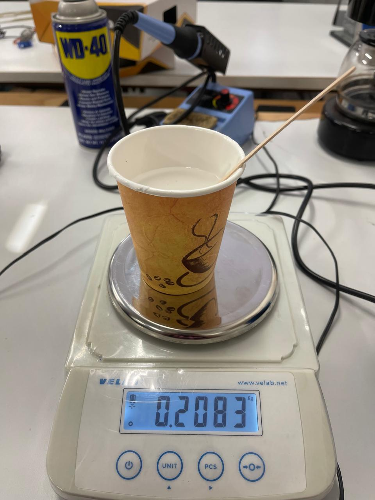
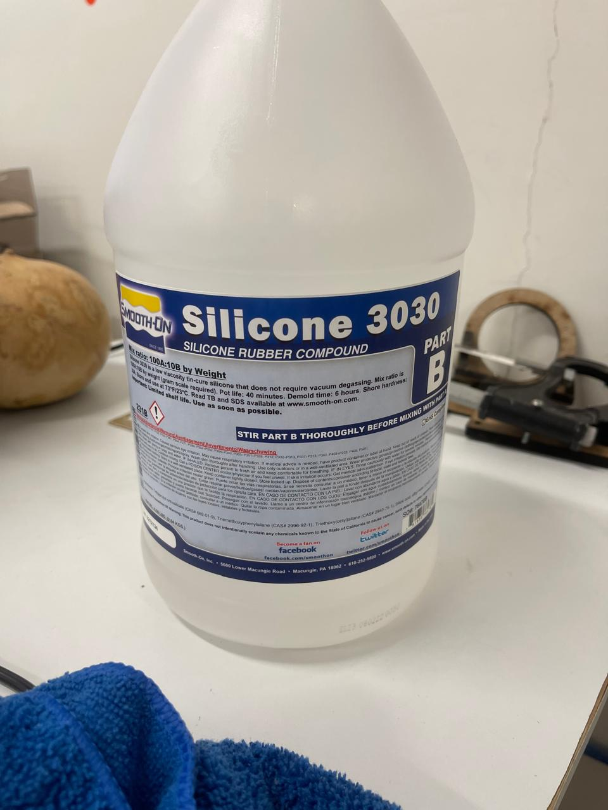
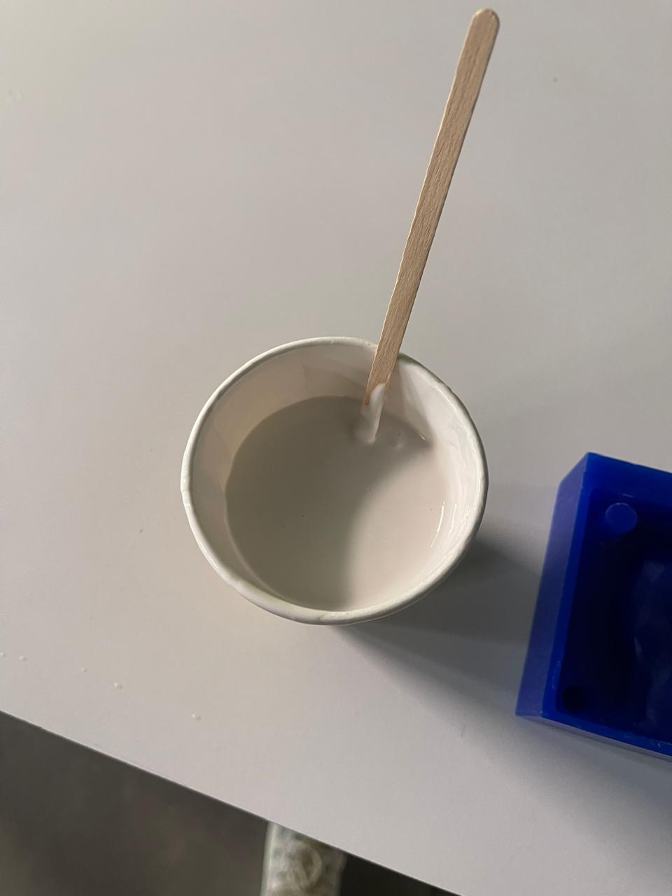
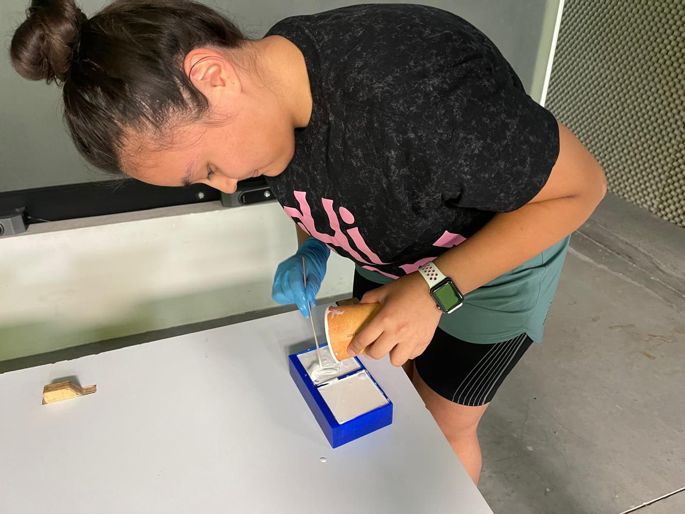
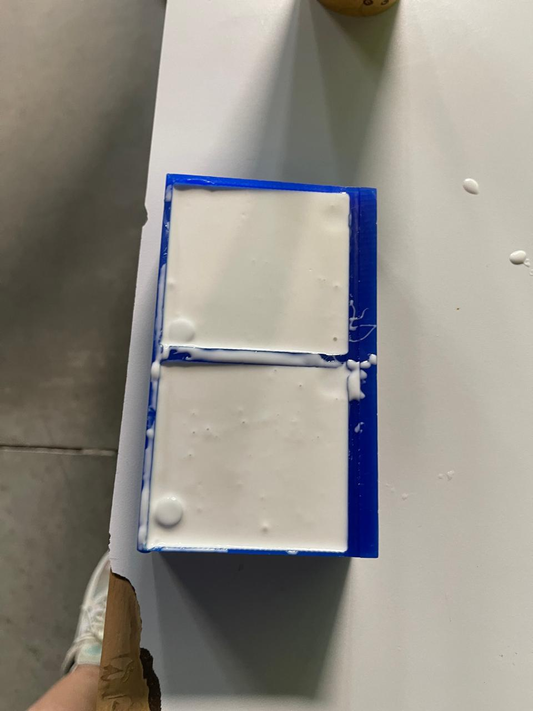
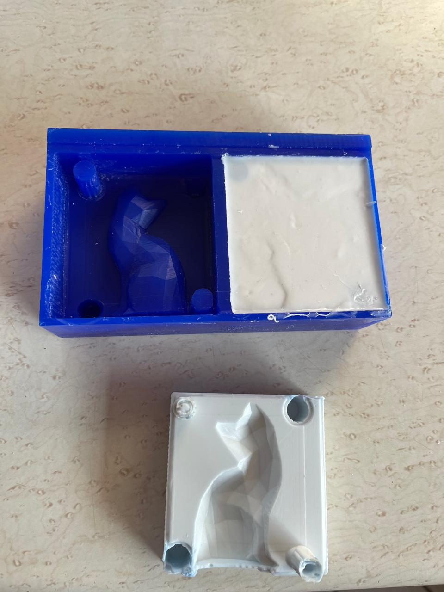
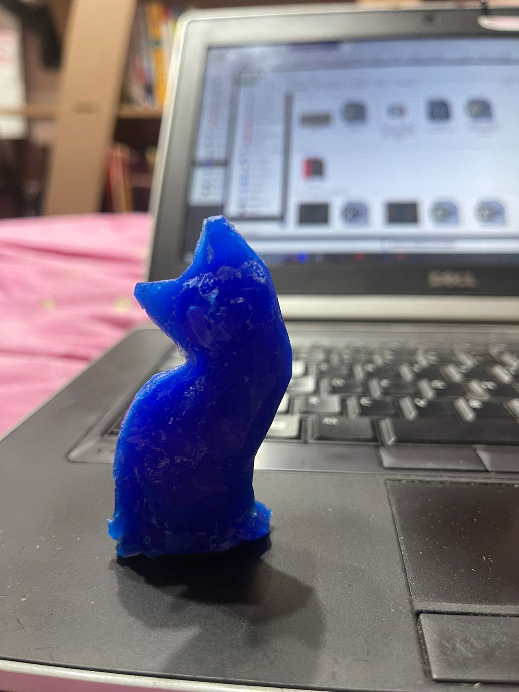
Problems
Some of the issues I encountered included the fact that the tool I had used to configure my G code for the router was broken, so I had to use another one. However, this resulted in some parts of my wax not being able to be cut because the tool wouldn't pass through them. Therefore, I had to manually wear down the wax a bit. Another problem arose when the holes in the roughing on the CNC became too deep, causing the material to overflow when poured. My solution was to cover them with some of the remaining wax cuttings and place a plastic barrier to prevent the wax from dripping. Another problem I faced was not knowing what to do next, so I decided to make a mold of silicon 3030 with the remaining wax to create a cat shape. However, it didn't turn out well because some parts remained unmelted. The solution was to melt a larger quantity.
Another issue I encountered was that the mold was drilled too much. My solution was to use a soldering iron to heat up the excess wax that came out while making the mold. I placed a piece of plastic over the holes to prevent the wax from dripping further